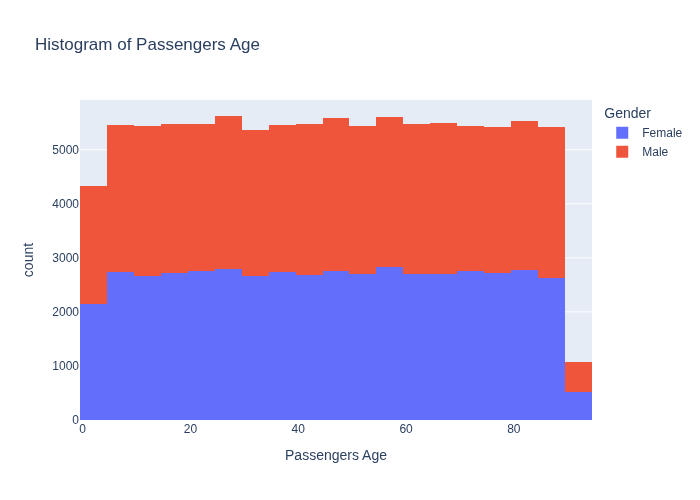

This histogram titled "Histogram of Passengers Age" shows the age distribution of passengers across the airline dataset. Generated using Plotly Express with 20 bins, the visualization displays passenger ages on the x-axis and frequency counts on the y-axis. The histogram is color-coded by gender, allowing for simultaneous analysis of age patterns across different gender groups. This dual-layer visualization helps identify the most common age ranges among passengers, reveals demographic trends, and highlights any age-based variations between genders. The age data is preprocessed and converted to integer format to ensure accurate binning and representation of the passenger age demographics.